Archive
作品总览
2025年至今完整发布作品总览，含新媒体发布与纸刊发布。

人物与访谈
高原日记：造物的玉树女人
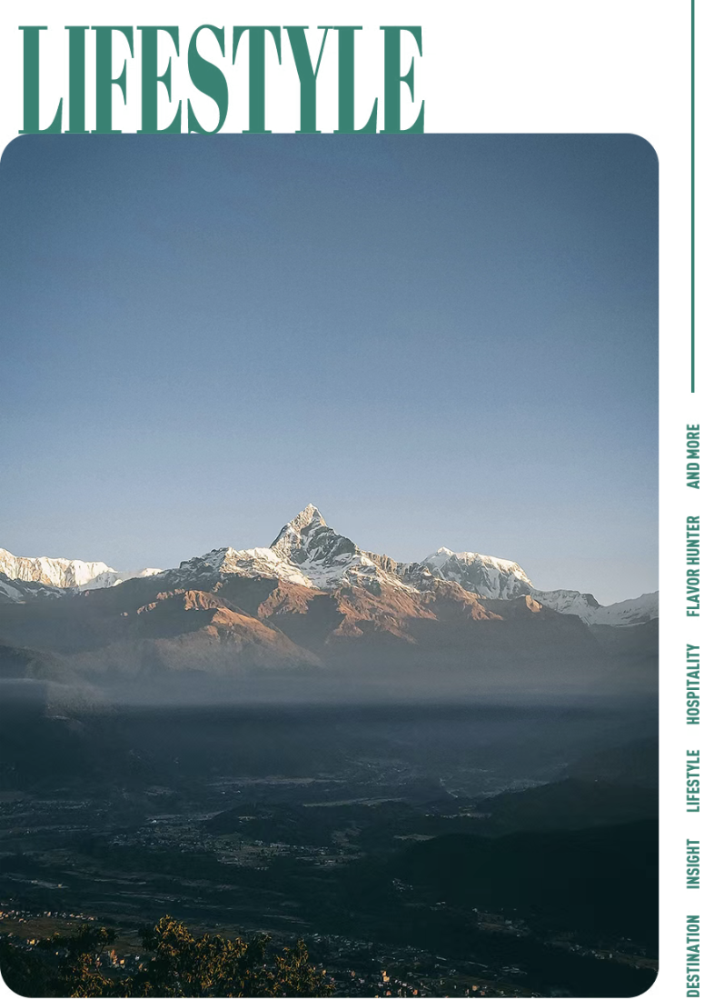
城市、旅行与生活方式
比清迈和巴厘岛更夯的旅居地，藏在南亚的雪山下
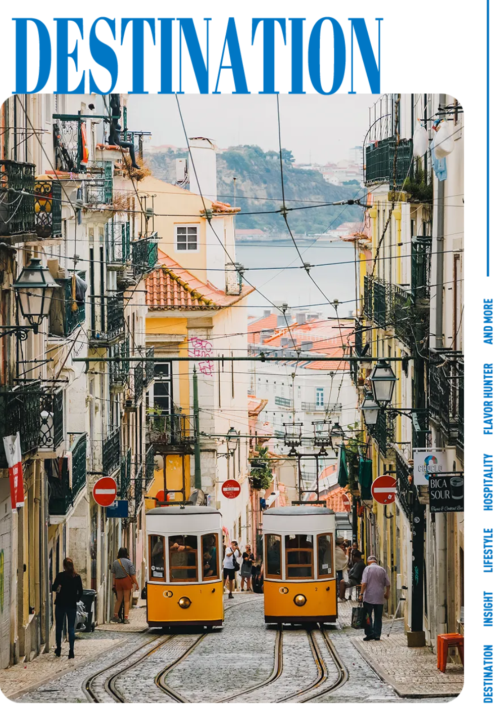
城市、旅行与生活方式
直飞开通在即！带上耳朵，进入这座南欧最夯首都
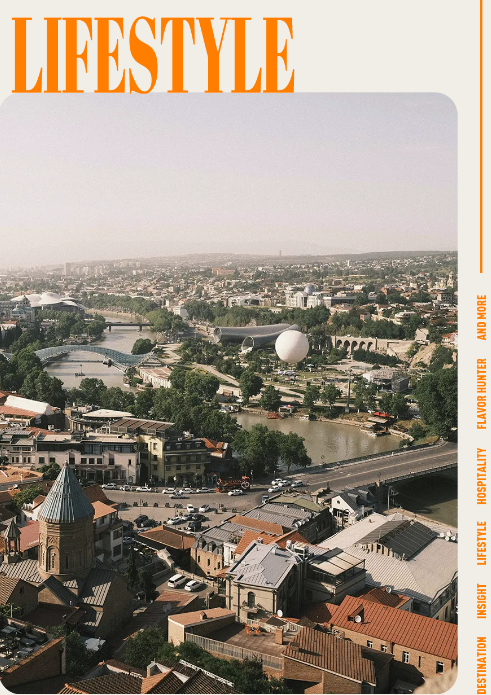
城市、旅行与生活方式
抛弃巴厘岛和清迈，数字游民们集体奔向第比利斯
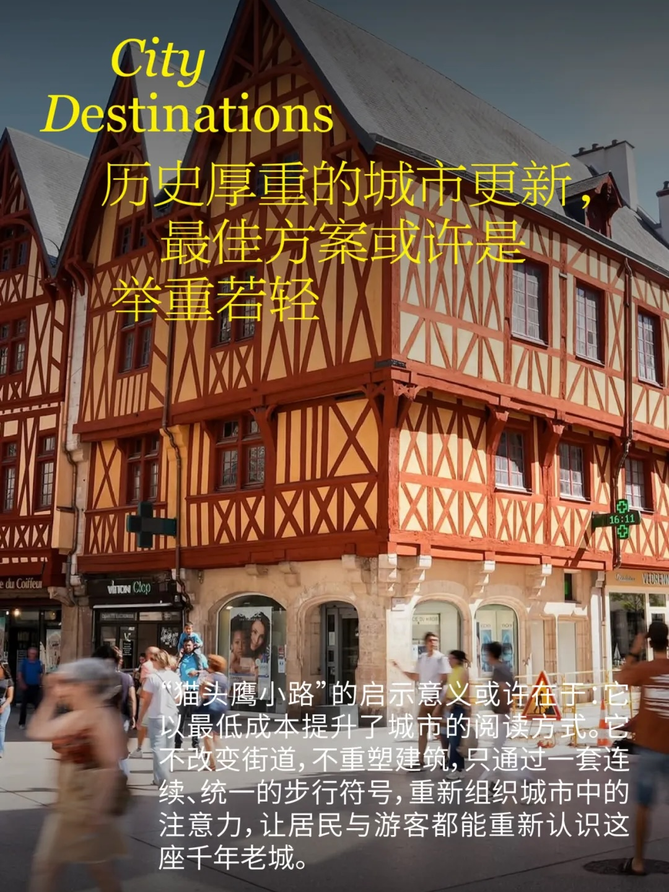
城市、旅行与生活方式
厚重历史城市的更新，有没有可能举重若轻？
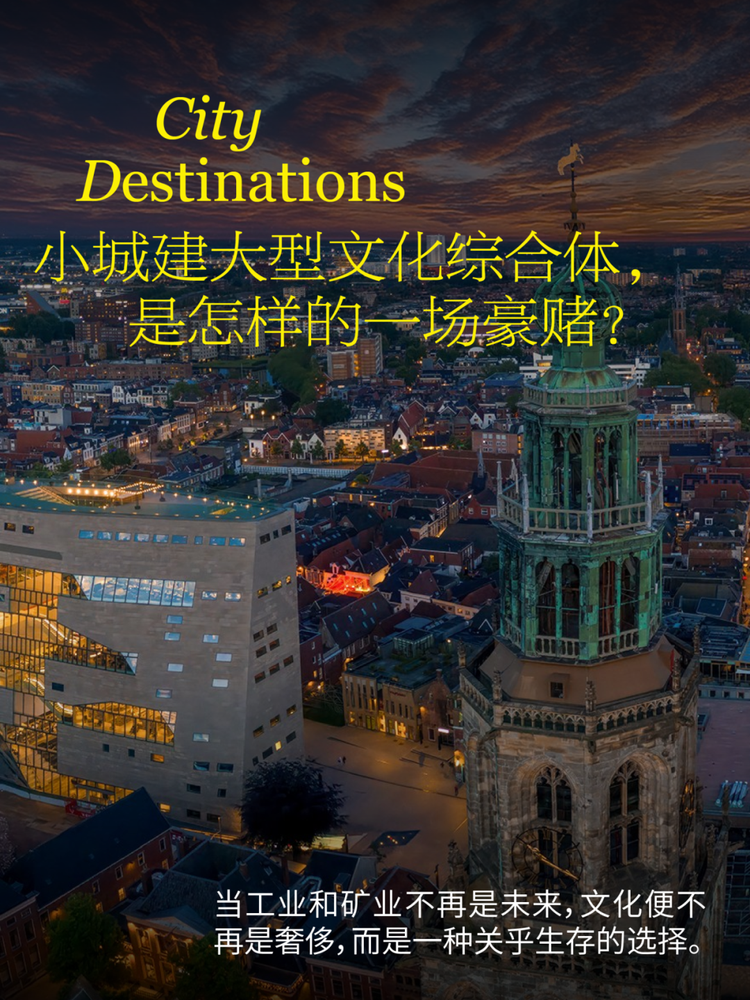
城市、旅行与生活方式
格罗宁根「论坛」：小城建大型文化综合体，是怎样的一场豪赌？

城市、旅行与生活方式
手工艺+文旅，能否成为地方破局之路？

设计、建筑与文化
Wallpaper独家｜底特律没有奇迹。
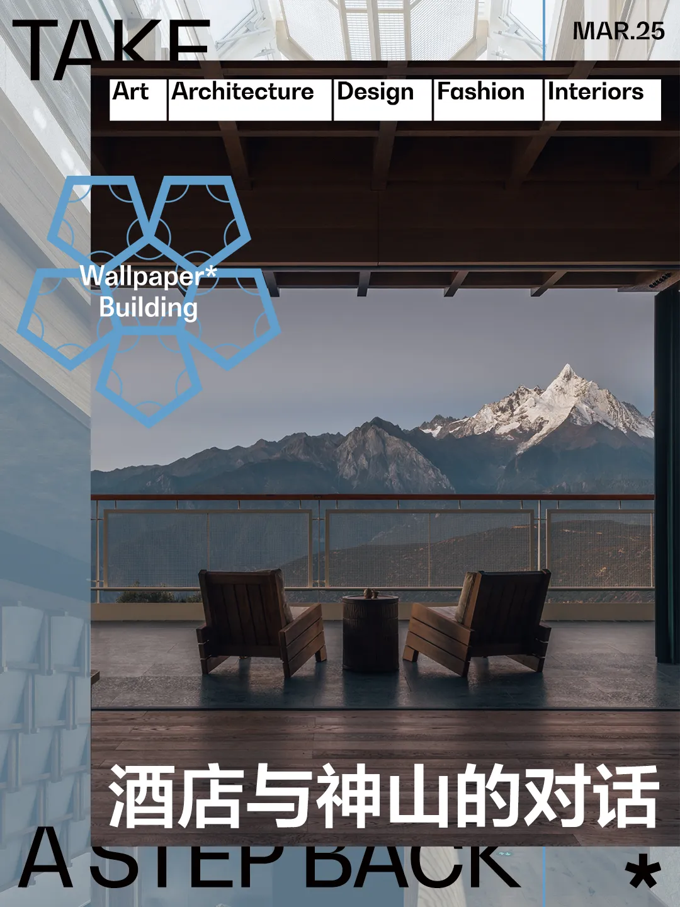
设计、建筑与文化
当人们涌向雪山，这间酒店选择“退后一步”
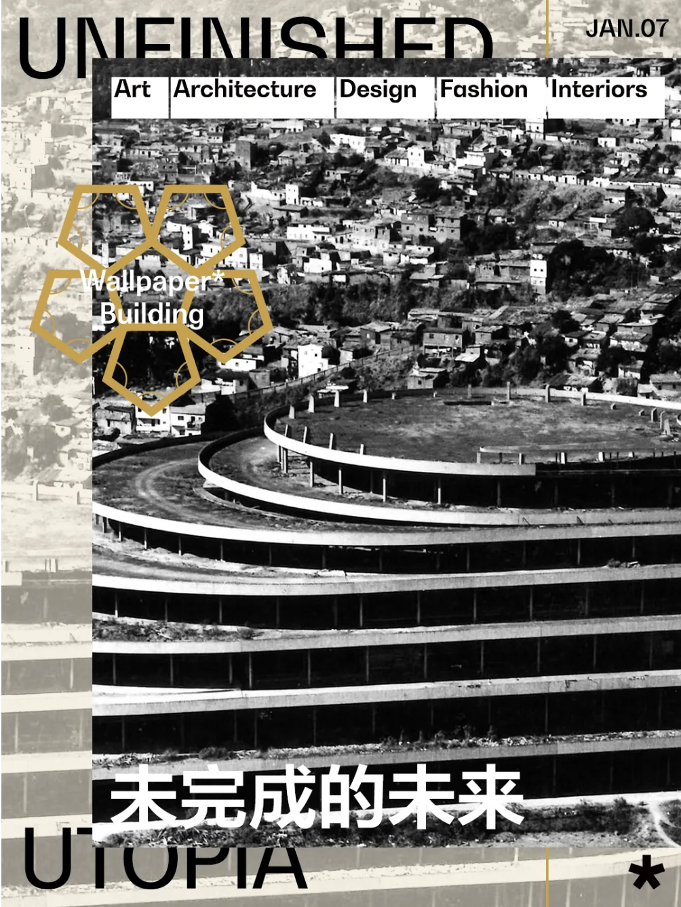
设计、建筑与文化
委内瑞拉怎么了？我们从螺旋大厦讲起
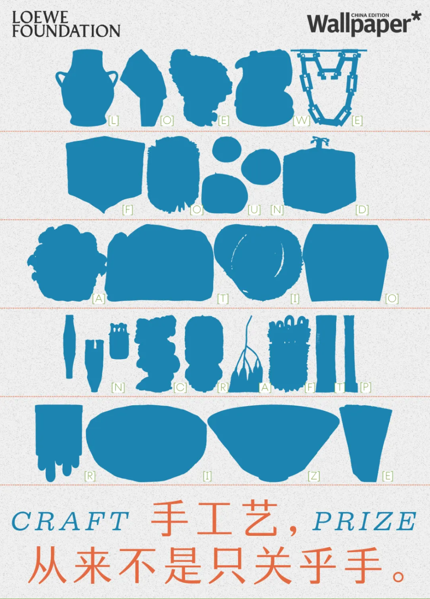
设计、建筑与文化
2025年LOEWE工艺奖专题报道｜手工艺，从来不是只关乎手

设计、建筑与文化
巴西大使夫人如何用设计和收藏布置她的家？
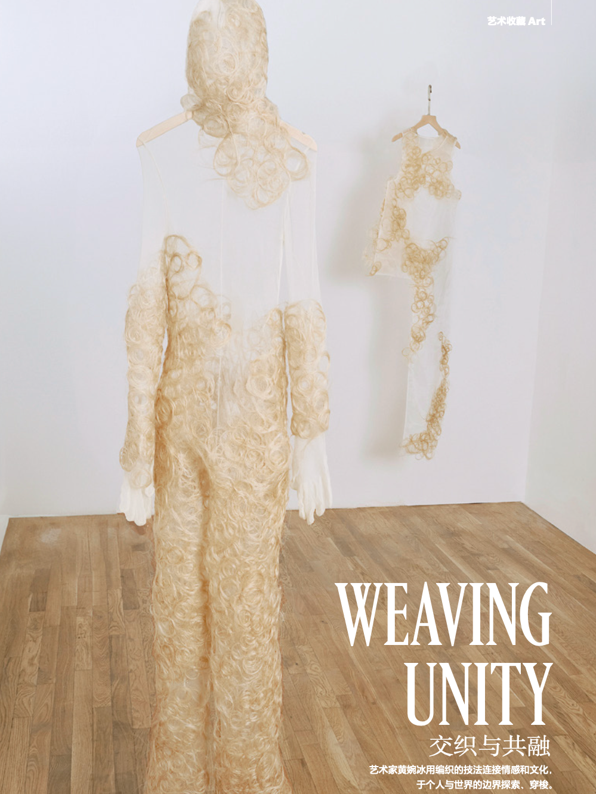
设计、建筑与文化
专访艺术家黄婉冰｜交织与共融
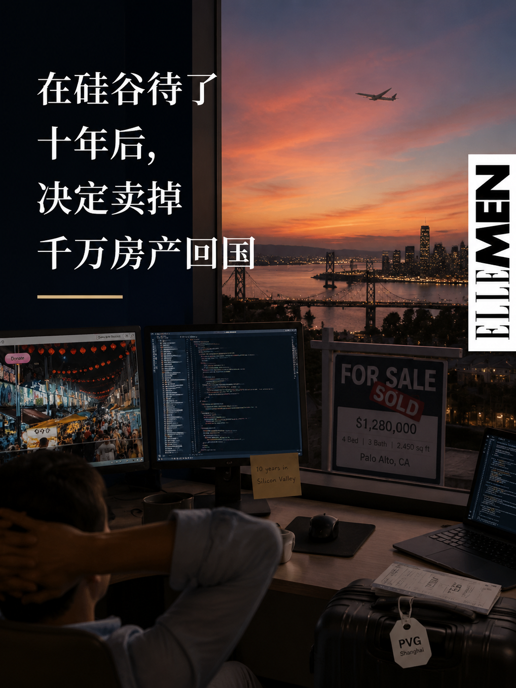
商业、科技与社会
“在硅谷待了十年后，我决定卖掉千万房产回国”
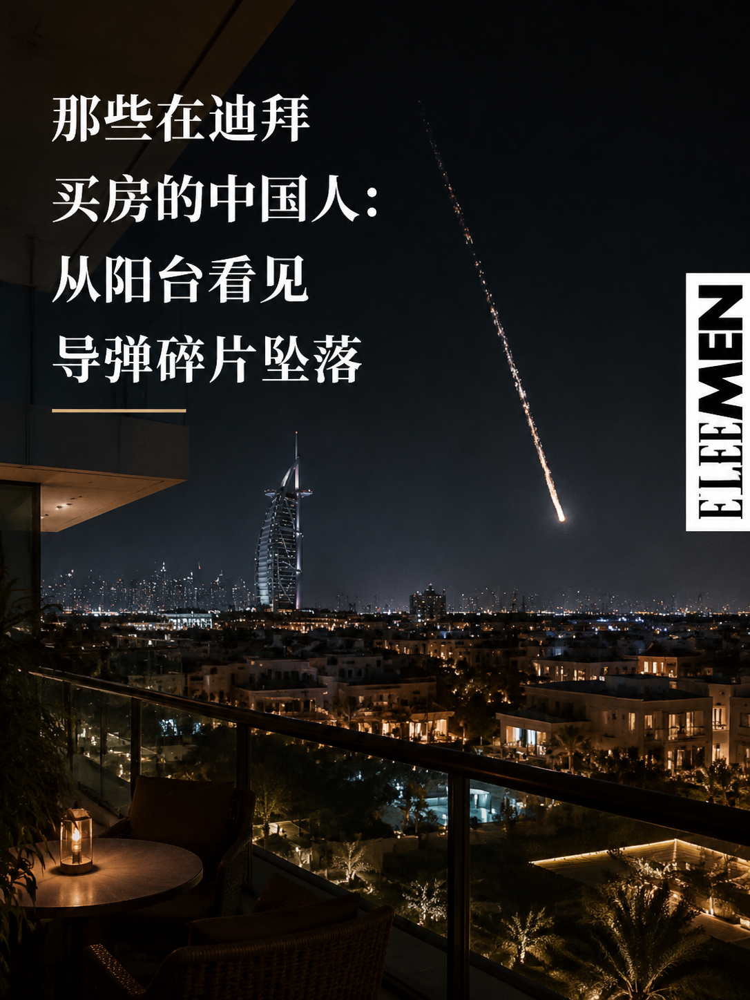
商业、科技与社会
那些在迪拜买房的中国人：从阳台看见导弹碎片坠落
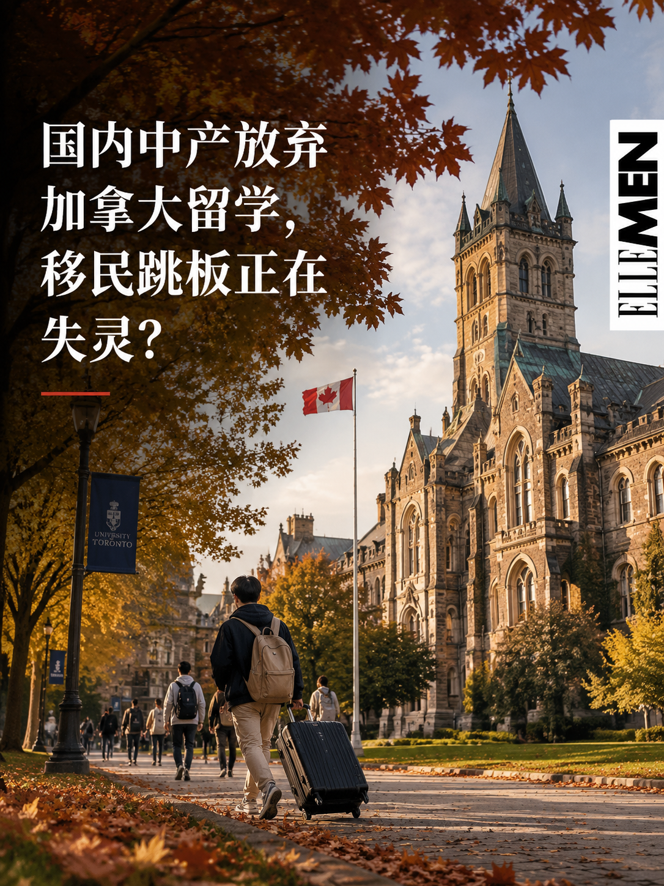
商业、科技与社会
国内中产放弃加拿大留学，移民跳板正在失灵？

商业、科技与社会
港漂开始在香港考公，稳定成了年轻人的生存共识
商业、科技与社会
硅谷开启第二轮大裁员：（掌控）AI（的人）正在职场“洗牌”
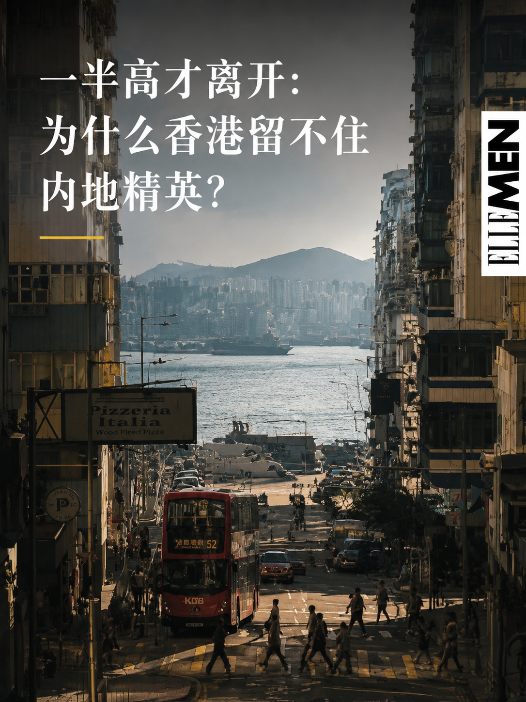
商业、科技与社会
一半高才离开：为什么香港留不住内地精英？
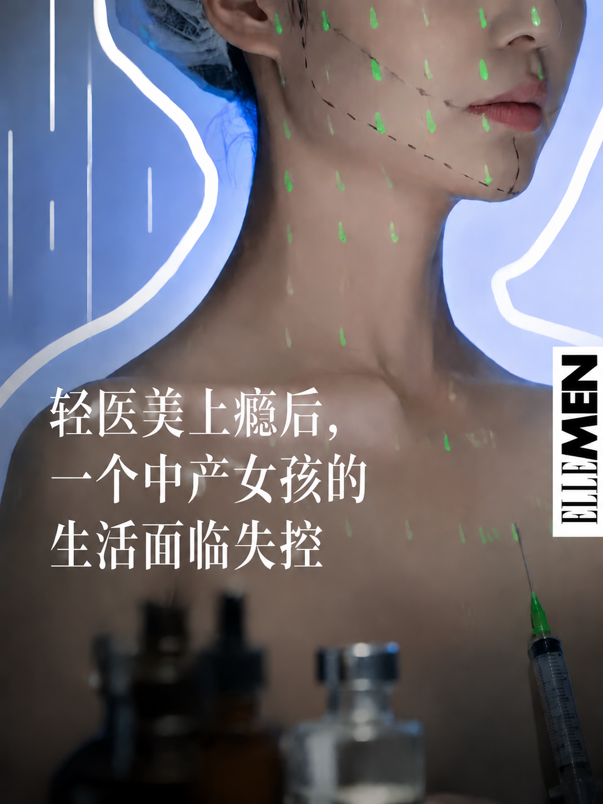
商业、科技与社会
轻医美上瘾后，一个中产女孩的生活面临失控


品牌特稿
一座改造的方盒子建筑里能容纳些什么？

品牌特稿
AI时代，我们为什么还需要实体家具展？


品牌特稿
Urban Fabric Rugs｜韵脚

品牌特稿
Aesop伊索海南店｜南海之畔的藻影浮光

品牌特稿